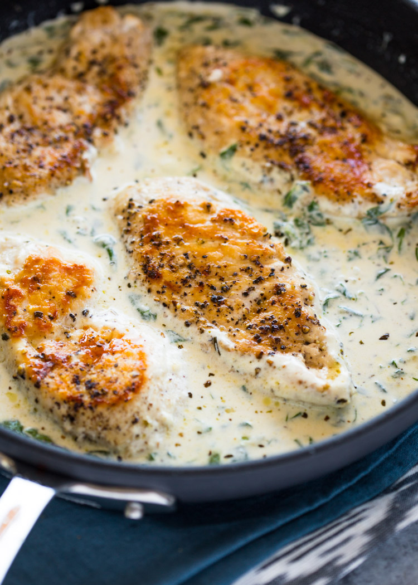

Creamy Garlic Parmesan Chicken

Description
This quick and tasty garlic and parmesan chicken is super easy to make.
The chicken is first cooked in olive oil and seasoned with just salt and pepper. After the chicken is cooked through, we will make the sauce.
Ingredients
- 4 small-medium chicken breasts or 2 large halved
- salt and pepper to taste
- 2 tablespoons olive oil
- 3-4 cloves garlic minced
- 1 cup light cream or heavy cream
- 1 tablespoons Italian seasoning or oregano
- 1/2 cup parmesan cheese grated
- 1 cup spinach chopped (optional)
Steps
- Season chicken with salt and pepper. Heat olive oil in a large heavy skillet or pan. Add chicken to the pan and cook for 5-6 minute per side or until the outside is golden and the chicken is cooked through (cooking times will vary depending on the thickness of the chicken breasts).
- Remove chicken from the pan, reduce heat to low-medium, and add garlic; stir for 30 seconds. Add the cream, Italian seasoning, and parmesan cheese. Stir to combine. Stir in 1 cup of chopped spinach if desired. Simmer for another 2-3 minutes.
- Return chicken to the pan and simmer for another minute then turn off heat. Spoon sauce over chicken. Serve with pasta or veggies.